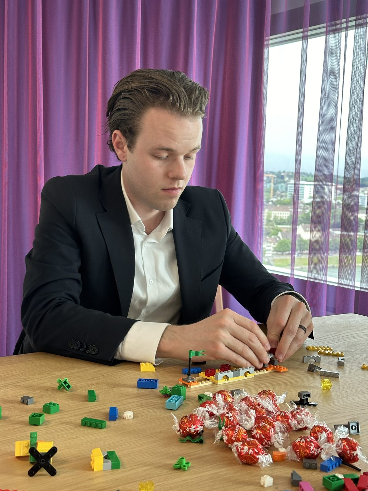
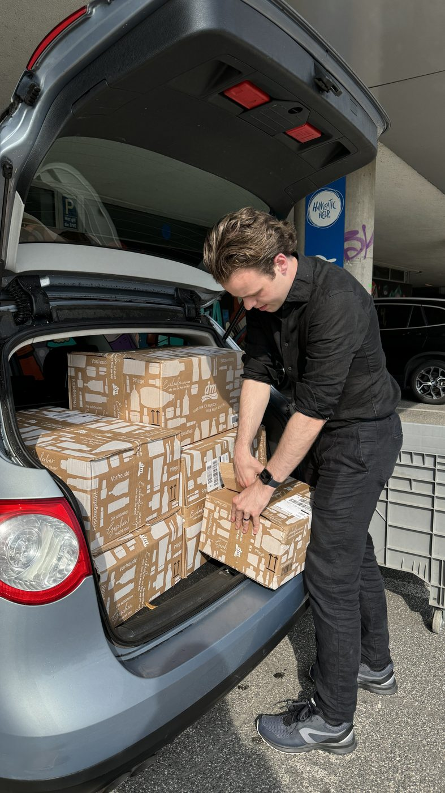

Create→Structure→Professionalize→Automate
Make it exist. Make it sound. Make it professional. Make it run on its own.
Building structures for businesses, families and capital.
For the past decade, I have worked across entrepreneurship, corporate advisory, technology and family governance — building companies, digital systems and organizational structures while developing an academic focus on finance, law and family enterprise.
Building structures for businesses, families and capital.
For the past decade, I have worked across entrepreneurship, corporate advisory, technology and family governance — building companies, digital systems and organizational structures while developing an academic focus on finance, law and family enterprise.
Building structures for businesses, families and capital.
For the past decade, I have worked across entrepreneurship, corporate advisory, technology and family governance — building companies, digital systems and organizational structures while developing an academic focus on finance, law and family enterprise.
From creating things to building institutions.
The pattern has been the same each time. Make it exist. Make it sound. Make it professional. Make it run on its own.
Make it exist. Make it sound. Make it professional. Make it run on its own.
My professional path started on the creative side: graphic design, video production, music production and DJing. Creating brands, media and digital experiences gradually evolved into building products and businesses of my own.
design · film · music · brandsCreating became building. I began building companies, digital products and technology infrastructure — moving from creating individual outputs to creating systems around them.
10 years of entrepreneurial activity · 350+ managed it customersBuilding became professionalizing. Working within banks, professional-services firms and global corporations added another perspective: how established institutions manage complexity, risk, transformation and scale.
alixpartners · roche · kpmg · pwc · m.m. warburgFrom projects to systems. My interest shifted from individual projects toward how technology, governance and data can make organizations less dependent on individual people and more capable of enduring.
digital governance · family manager · data analytics and aiMy professional path started on the creative side: graphic design, video production, music production and DJing. Creating brands, media and digital experiences gradually evolved into building products and businesses of my own.
design · film · music · brandsCreating became building. I began building companies, digital products and technology infrastructure — moving from creating individual outputs to creating systems around them.
10 years of entrepreneurial activity · 350+ managed it customersBuilding became professionalizing. Working within banks, professional-services firms and global corporations added another perspective: how established institutions manage complexity, risk, transformation and scale.
alixpartners · roche · kpmg · pwc · m.m. warburgFrom projects to systems. My interest shifted from individual projects toward how technology, governance and data can make organizations less dependent on individual people and more capable of enduring.
digital governance · family manager · data analytics and aiThe four roles developed in parallel rather than in sequence, and they inform each other: advising is sharper for having built, investing is more disciplined for having advised, and research is grounded in all three.
I have worked in professional advisory environments across consulting firms, banks and family offices, on transformation programs, investigations, due diligence, transactions and corporate structuring. This is the conventional part of my profile, and it anchors the rest.
sap-led transformation · investigations · due diligence · company formations · asset transfers and mergers · corporate governance
Entrepreneurship has been a continuous part of my work since 2016. The ventures differ; the pattern behind them does not: create, structure, professionalize, automate.
I invest across private and public markets, including early-stage companies and listed securities.
Early-stage investments in 15+ companies since 2012, alongside a public-markets strategy run via Wikifolio with a multi-asset allocation.
Alongside my personal investment activities, I serve on the board of the Hartmann Family Office and chair the Investment Committee of the Vereinigung der Familie Hartmann, contributing to the governance and strategic allocation of a long-term multi-asset portfolio.
Founding and development of the family office, a digital family governance platform, e-voting, and the administration and reporting systems behind the family association.
I was trained in graphic design and video production, and produced music and worked as a DJ, before I worked in finance. That background, combined with years of running IT and hosting infrastructure, is why I build things myself rather than specify them for others.
My academic work sits at the intersection of finance, law and family enterprise.
I did not come to family governance from the literature. I built governance and administration structures for a family association and a family office first, then began to study why such structures hold or fail. The research asks how ownership, capital and decision rights in families can be organized to endure across generations.
Doctoral research on the governance of single family offices: board composition, decision rights, and the wealth thresholds at which a dedicated structure becomes rational.
Title, outlet, year, status and link. Published and submitted work only — loaded live from my ORCID record.
I am a continuous and, admittedly, obsessive learner. Beyond degrees and work, I take a course wherever a question needs a better answer than the one I have.
Listed here is what came with a certificate. Most of what I learn does not.
I started building things early.
My first work was creative: music, design, film. From 2016, that turned into companies, then technology infrastructure, then financial services and corporate consulting, and eventually into family governance and academic research.
The pattern has been the same each time. I create something. Then I work on how it is perceived. Then on its legal and corporate structure. Then on its systems and automation. Then on its finances and governance. The research is the last step of that sequence: asking how such structures become institutions.
Ten years later, at 26, these experiences have developed into one central interest: understanding how organizations, ownership and capital can be structured to endure.
I live in Zug, Switzerland.


Complete record of positions, ventures, education and memberships.
The website maximizes clarity; the CV maximizes completeness. Everything that is not on these pages is in the document.